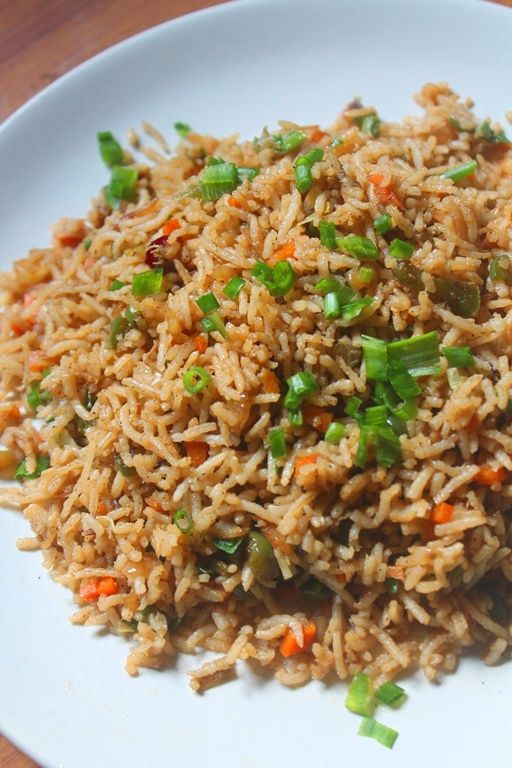

Fried Rice

Preparation Time: 20 mins
Difficulty: Easy
Fried Rice is a quick and flavorful dish made by stir-frying cooked rice with vegetables, sauces, and spices. It is perfect for using leftover rice.
Ingredients
- Cooked rice
- Vegetables
- Soy sauce
- Oil
Steps
- Cook rice beforehand and let it cool completely.
- Heat oil in a pan or wok.
- Add chopped garlic and sauté for a few seconds.
- Add vegetables like carrots, beans, and capsicum.
- Stir-fry the vegetables on high flame.
- Add soy sauce, salt, and pepper.
- Add cooked rice to the pan.
- Mix everything well without breaking the rice.
- Cook for 2–3 minutes and serve hot.